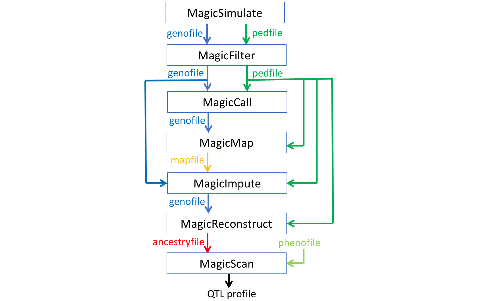

Overview
This section describes each step of the RABBIT pipeline, illustrated by a simulated connected multiparental population. See pipeline.jl for the collection of julia code blocks on this page. See pipeline.cmd for window CMD or pipeline.sh for Unix/Linux shell. See "RABBITDocs\docs\src\pipeline" for all the scripts and output files.

- Skip MagicCall and MagicMap if a reliable markermap (physical or genetic) is available.
- Perform MagicCall for sequence data in heterozygous mapping populations.
Code blocks for CLI start with julia rabbit_funcname.jl, assuming that the paths to julia.exe and the main function file have been added in the platform environmental variable PATH. See section "Guide/Run julia in CLI".